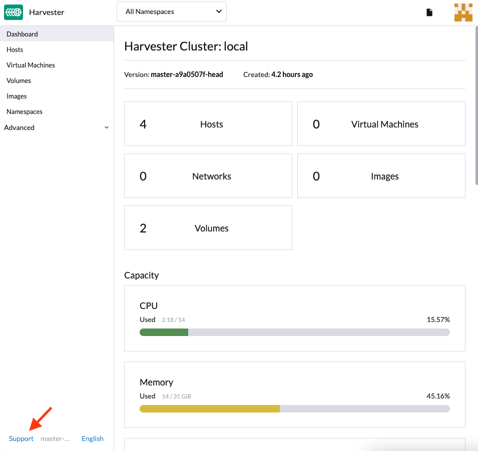
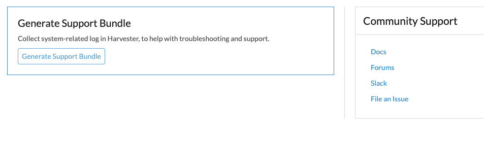
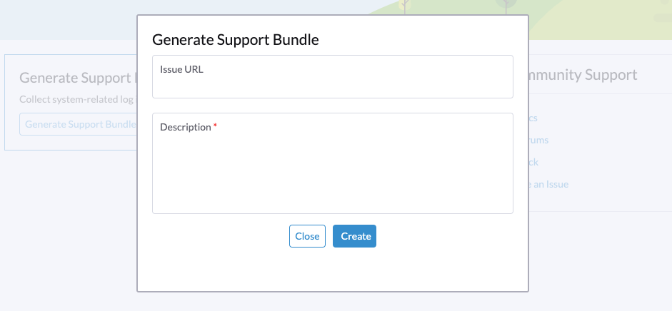

Cluster Issues
Fail to Deploy a Multi-node Cluster Due to Incorrect HTTP Proxy Setting
ISO Installation Without a Configuration File
Configure HTTP Proxy During Installation
In some environments, you configure http-proxy of OS Environment during installation.
Configure HTTP Proxy After First Node is Ready
After the first node is installed successfully, you login into the UI to configure http-proxy of System Settings.
Then you continue to add more nodes to the cluster.
One Node Becomes Unavailable
The issue you may encounter:
The first node is installed successfully. The second node is installed successfully. The third node is installed successfully. Then the second node changes to Unavialable state and cannot recover automatically.
Solution
When the nodes in the cluster do not use the HTTP Proxy to communicate with each other after the first node is installed successfully, you need to configure http-proxy.noProxy against the CIDR used by those nodes.
For example, your cluster assigns IPs from CIDR 172.26.50.128/27 to nodes via DHCP/static setting, please add this CIDR to noProxy.
After setting this, you can continue to add new nodes to the cluster.
For more details, please refer to issue 3091.
ISO Installation With a Configuration File
When a configuration file is used in ISO installation, please configure proper http-proxy in System Settings.
PXE Boot Installation
When PXE Boot Installation is adopted, please configure proper http-proxy in OS Environment and System Settings.
Generate a Support Bundle
Users can generate a support bundle in the UI with the following steps:
-
Click the
Supportlink at the bottom-left of the UI.  -
Click
Generate Support Bundlebutton.  -
Enter a useful description for the support bundle and click
Createto generate and download a support bundle. 
|
Whenever you encounter an issue that may be related to workloads deployed in custom namespaces, configure the support-bundle-namespaces setting to include those namespaces as data sources. The support bundle only collects data from the configured namespaces. For timeout errors, you can adjust the value of the support-bundle-timeout setting and then restart the support bundle generation process. If you intend to use a non-default container image, you can configure the support-bundle-image setting. |
For information about collecting guest cluster logs and configuration files, see Guest Cluster Log Collection.
Manually Download and Retain a Support Bundle File
By default, a support bundle file is automatically generated, downloaded, and deleted after you click Create on the UI. However, you may want to retain a file for various reasons, including the following:
-
You are unable to download the file because of network connectivity errors and other issues.
-
You must use a previously generated file to troubleshoot issues (because generating a support bundle file takes time).
-
You want to view information that only exists in a previously generated file.
Even if the file remains in the cluster, the UI does not provide a download link. Use the following workaround to generate, manually download, and retain a support bundle file:
Generate the File and Prevent Automatic Downloading
-
On the UI, click Generate Support Bundle.
-
When the progress indicator reaches 20% to 80%, close the browser tab to prevent automatic downloading of the generated file.
-
Retrieve a list of all support bundles in all namespaces using kubectl.
Example:
$ kubectl get supportbundle -A NAMESPACE NAME ISSUE_URL DESCRIPTION AGE harvester-system bundle-htl5f sp1 3h43m
-
Retrieve the details of all existing support bundles using the command
kubectl get supportbundle -A -o yaml.Example:
$ kubectl get supportbundle -A -oyaml apiVersion: v1 items: - apiVersion: harvesterhci.io/v1beta1 kind: SupportBundle metadata: creationTimestamp: "2024-02-02T11:18:09Z" generation: 5 name: bundle-htl5f // resource name namespace: harvester-system resourceVersion: "1218311" uid: a3776373-05fe-4584-8a9a-baac3fa91bbf spec: description: sp1 issueURL: "" status: conditions: - lastUpdateTime: "2024-02-02T11:18:38Z" status: "True" type: Initialized filename: supportbundle_db25ccb6-b52a-4f9d-97dd-db2df2b004d4_2024-02-02T11-18-10Z.zip // support bundle file name filesize: 8868712 progress: 100 // 100 means successfully generated state: ready
The file is ready for downloading when the value of progress is "100" and the value of state is "ready".
Download the File
-
Create a download URL that includes the following information:
-
VIP or DNS name
-
Resource name of the file
-
Parameter
?retain=true: If you do not include this parameter, resources related to the support bundle are automatically deleted after the file is successfully downloaded.
Example:
-
-
Download the file using either a command-line tool (for example, curl and wget) or a web browser.
Example:
-
Verify that resources related to the support bundle were not deleted.
Example:
$ kubectl get supportbundle -A NAMESPACE NAME ISSUE_URL DESCRIPTION AGE harvester-system bundle-htl5f sp1 3h43m
(Optional) Delete the Related Resources
Retained support bundle files consume memory and storage resources. Each file is backed by a supportbundle-manager-bundle* pod in the harvester-system namespace, and the generated ZIP file is stored in the /tmp folder of the pod’s memory-based filesystem.
Example:
$ kubectl get pods -n harvester-system NAME READY STATUS RESTARTS AGE supportbundle-manager-bundle-dtl2k-69dcc69b59-w64vl 1/1 Running 0 8m18s
You can delete the related resources using the following methods:
-
Manual: Run the command
kubectl delete supportbundle -n {namespace} {resource-name}. Deleting a support bundle object automatically deletes the pod that backs it.Example:
$ kubectl delete supportbundle -n harvester-system bundle-htl5f supportbundle.harvesterhci.io "bundle-htl5f" deleted $ kubectl get supportbundle -A No resources found
-
Automatic: The related resources are deleted based on how the following settings are configured:
-
support-bundle-expiration: Defines the time allowed for retaining a support bundle file
-
support-bundle-timeout: Defines the time allowed for generating a support bundle file
-
Manually Copy the Support Bundle File
You can run the command kubectl cp to copy the generated file from the backing pod.
Example:
kubectl cp harvester-system/supportbundle-manager-bundle-dtl2k-69dcc69b59-w64vl:/tmp/support-bundle-kit/supportbundle_db25ccb6-b52a-4f9d-97dd-db2df2b004d4_2024-02-02T11-18-10Z.zip bundle.zip
Manually Collect Data for the Support Bundle
Harvester is unable to collect data and generate a support bundle when the node is inaccessible or not ready. The workaround is to run a script and compress the generated files.
-
Prepare the environment.
mkdir -p /tmp/support-bundle # ensure /tmp/support-bundle exists echo 'JOURNALCTL="/usr/bin/journalctl -o short-precise"' > /tmp/common export SUPPORT_BUNDLE_NODE_NAME=$(hostname) -
Run the following commands:
-
Download the script:
curl -o collector-harvester https://raw.githubusercontent.com/rancher/support-bundle-kit/refs/heads/master/hack/collector-harvester -
Add executable permissions:
chmod +x collector-harvester -
Run the script:
./collector-harvester / /tmp/support-bundle
-
-
Compress the files in
/tmp/support-bundle, and then attach the archive to the related issue.
Known Limitations
-
Replacing the backing pod prevents the support bundle file from being downloaded.
The support bundle file is stored in the
/tmpfolder of the pod’s memory-based filesystem so it is removed when the pod is replaced during cluster and node rebooting, Kubernetes pod rescheduling, and other processes. After starting, the new pod regenerates the file but assigns a name that is different from the file name in the support bundle object.Example:
-
A support bundle file is generated and retained.
$ kubectl get supportbundle -A -oyaml apiVersion: v1 items: - apiVersion: harvesterhci.io/v1beta1 kind: SupportBundle metadata: creationTimestamp: "2024-02-06T11:01:19Z" generation: 5 name: bundle-yr2vq namespace: harvester-system resourceVersion: "1583252" uid: eb8538cf-886b-4791-a7b0-dbc34dcee524 spec: description: sp2 issueURL: "" status: conditions: - lastUpdateTime: "2024-02-06T11:01:47Z" status: "True" type: Initialized filename: supportbundle_db25ccb6-b52a-4f9d-97dd-db2df2b004d4_2024-02-06T11-01-20Z.zip // file is ready to download filesize: 7832010 progress: 100 state: ready kind: List metadata: resourceVersion: "" -
The backing pod restarts.
$ kubectl get pods -n harvester-system supportbundle-manager-bundle-yr2vq-c5484fbdf-9pz8d -oyaml apiVersion: v1 kind: Pod metadata: ... labels: app: support-bundle-manager pod-template-hash: c5484fbdf rancher/supportbundle: bundle-yr2vq name: supportbundle-manager-bundle-yr2vq-c5484fbdf-9pz8d namespace: harvester-system containerStatuses: - containerID: containerd://ea82b63875c18a2b5b36afea6a47a99a5efd26464f94d401cde1727d175ef740 ... name: manager ready: true restartCount: 1 started: true state: running: startedAt: "2024-02-06T11:05:33Z" // pod's latest starting timestamp, newer than the timestamp in support bundle's file name -
The backing pod regenerates the file after it starts.
The name of the regenerated file is different from the file name recorded in the support bundle object.
$ kubectl exec -i -t -n harvester-system supportbundle-manager-bundle-yr2vq-c5484fbdf-9pz8d -- ls /tmp/support-bundle-kit -alth total 2.2M drwxr-xr-x 3 root root 4.0K Feb 6 11:05 . -rw-r--r-- 1 root root 2.2M Feb 6 11:05 supportbundle_db25ccb6-b52a-4f9d-97dd-db2df2b004d4_2024-02-06T11-05-34Z.zip // different with above file name
-
Attempts to download the regenerated file fail.
The following download URL cannot be used to access the regenerated file.
-
-
Retained support bundle files may affect system and node rebooting, node draining, and system upgrades.
Retained support bundle files are backed by pods in the
harvester-systemnamespace. These pods are replaced during system and node rebooting, node draining, and system upgrades, consuming CPU and memory resources. Moreover, the regenerated files are very similar in content to the retained files, which means that storage resources are also unnecessarily consumed.
For more information, see Issue 3383.
Access Embedded Rancher and Longhorn Dashboards
You can now access the embedded Rancher and Longhorn dashboards directly on the Support page, but you must first go to the Preferences page and check the Enable Extension developer features box under Advanced Features.
|
We only support using the embedded Rancher and Longhorn dashboards for debugging and validation purposes. For Rancher’s multi-cluster and multi-tenant integration, please refer to the docs here. |
I can’t access SUSE® Virtualization after I changed SSL/TLS enabled protocols and ciphers
If you changed SSL/TLS enabled protocols and ciphers settings and you no longer have access to the UI and API, it’s highly possible that NGINX Ingress Controller has stopped working due to the misconfigured SSL/TLS protocols and ciphers. Follow these steps to reset the setting:
-
Following FAQ to SSH into the node and switch to
rootuser.$ sudo -s
-
Editing setting
ssl-parametersmanually usingkubectl:# kubectl edit settings ssl-parameters
-
Deleting the line
value: ...so that NGINX Ingress Controller will use the default protocols and ciphers.apiVersion: harvesterhci.io/v1beta1 default: '{}' kind: Setting metadata: name: ssl-parameters ... value: '{"protocols":"TLS99","ciphers":"WRONG_CIPHER"}' # <- Delete this line -
Save the change and you should see the following response after exit from the editor:
setting.harvesterhci.io/ssl-parameters edited
You can further check the logs of Pod rke2-ingress-nginx-controller to see if NGINX Ingress Controller is working correctly.
Network interfaces are not showing up
You may need help finding the correct interface with a 10G uplink since the interface is not showing up. The uplink doesn’t show up when the ixgbe module fails to load because an unsupported SFP+ module type is detected.
How to identify the issue with the unsupported SFP?
Execute the command lspci | grep -i net to see the number of NIC ports connected to the motherboard. By running the command ip a, you can gather information about the detected interfaces. If the number of detected interfaces is less than the number of identified NIC ports, then it’s likely that the problem arises from using an unsupported SFP+ module.
Testing
You can perform a simple test to verify whether the unsupported SFP+ is the cause. Follow these steps on a running node:
-
Create the file
/etc/modprobe.d/ixgbe.confmanually with the content:options ixgbe allow_unsupported_sfp=1
-
Then run following command:
rmmod ixgbe && modprobe ixgbe
If the above steps are successful and the missing interface shows, we can confirm that the issue is an unsupported SFP+. However, the above test is not permanent and will be flushed out once rebooted.
Solution
Due to support issues, Intel restricts the types of SFPs used on their NICs. To make the above changes persistent, adding the following content to a config.yaml during installation is recommended.
os:
write_files:
- content: |
options ixgbe allow_unsupported_sfp=1
path: /etc/modprobe.d/ixgbe.conf
- content: |
name: "reload ixgbe module"
stages:
boot:
- commands:
- rmmod ixgbe && modprobe ixgbe
path: /oem/99_ixgbe.yaml